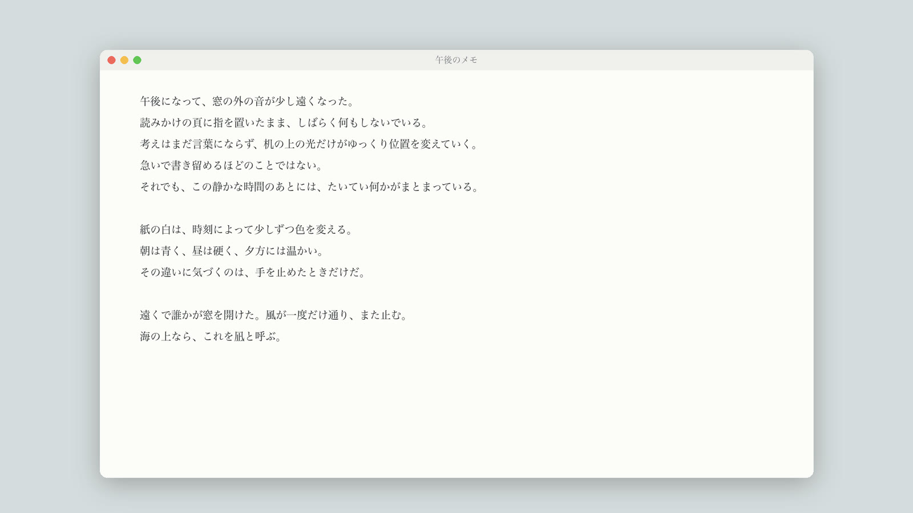
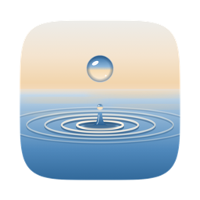

凪
手が止まると、
画面に日が差す。
When your hands rest,
light falls on the screen.
Nagi（なぎ）は、作業中のデスクトップに木漏れ日や雨を描く Mac のメニューバーアプリです。キーボードとマウスから手を離して少し待つと、光が現れます。 Nagi is a Mac menu-bar app that brings sunlight through leaves, rain and more onto the desktop you are working on. Take your hands off the keyboard and mouse, wait a moment, and the light appears.

風がやむと、海は凪ぐ。 When the wind drops, the sea goes calm.
キーを打ち、ポインタを動かすことを、風に見立てています。手を動かしているあいだ Nagi は何も描かず、手が止まると現れ、また動かすと 1 秒足らずで引きます。凪（なぎ）は、風がやんで海が静まることです。 Nagi treats your typing and pointing as wind. While your hands move it draws nothing; when they stop it appears, and when they move again it withdraws in under a second. Nagi (凪) is the Japanese word for the calm that settles on the sea when the wind dies down.
スクリーンセーバーは長く席を離れたときにしか出ず、壁紙はウィンドウに隠れて見えません。Nagi は、開いている文書やウィンドウの上に、光や水を直接描きます。森で本を読むとき目に入るのは、木そのものではなく、頁の上で揺れる木漏れ日です。 A screen saver only appears once you have been away for a while, and a wallpaper stays hidden behind your windows. Nagi draws light and water directly over the documents and windows you have open. When you read in a forest, what you see is not the trees but the sunlight moving on the page.
止まっているほど、深くなる。 The longer you stay still, the deeper it grows.
手を止めた直後の表現は控えめです。そのまま考えごとを続けていると、木漏れ日には低い枝の葉影が加わり、雨は本降りになり、結晶の奥にほのかな光がともります。少し手を動かしただけでは、育った景色はやり直しになりません。 Right after you stop, it begins quietly. Keep thinking, and the shadows of low leaves join the sunlight, the rain grows heavy, and a faint light comes on deep inside the crystals. Moving your hands for a moment does not start it all over again.
どれも、用意した画像や動画を貼ったものではありません。光の屈折、水の波、結晶の育ち方をその場で計算して描くので、決まった動きの繰り返しには見えません。 None of it is a prepared picture or video. Refraction, waves and the growth of crystals are computed as they happen, so the motion never settles into a loop you can see.
いまの、この場所の空。 Today's sky, where you are.
Nagi が描く光は、架空の空のものではありません。Mac の時計とタイムゾーンから、いまの日時とおおよその場所（タイムゾーンを代表する都市。日本なら東京）を決め、太陽の高さと方位を計算しています。朝は日が低いので影が長く、正午は高い所から光が差し、夕方は光の色が暖かくなります。 The light Nagi draws does not come from an imagined sky. From your Mac's clock and time zone it takes the date, the time and a rough location (the main city of your time zone: Tokyo for Japan), and works out the height and direction of the sun. In the morning the sun is low and the shadows long; at noon the light comes from high up; late in the day it turns warm.
夜は月を計算します。木漏れ日と水中の光は、いま月がある方向から同じ木と水面を照らし、満ち欠けで明るさを変えます。満月に近いほど明るく、新月のころは何も現れません。 At night it works out the moon. Komorebi and Light Under Water light the same trees and water from where the moon is now, and the phase sets how bright that light is: brighter towards the full moon, and nothing at all around the new moon.
12:00
水中の光Light Under Water
画面を、水深 28 cm の澄んだ水の底に見立てます。波立つ水面で屈折した日の光が、明るい網目になって底を渡ります。網目は、文字を追う目をそらさない遅さで形を変え、雲が日を隠すと溶けて消えます。 The screen becomes the bottom of clear water 28 cm deep. Sunlight refracted by the moving surface crosses it as a bright net. The net changes slowly enough not to pull your eyes from the text, and melts away when a cloud covers the sun.
13:00
波紋Ripples
光過敏について：波紋は、文字の上で速く明滅します。そのためアプリでは既定でオフにしています。光に敏感な方は、この映像を再生せず、アプリでもオンにしないでください。 Photosensitivity: ripples make text under them flicker quickly, so they are off by default in the app. If you are sensitive to flashing light, don't play this video, and leave ripples off in the app.
画面に浅い水が張ってあると見立て、そこへ水滴が落ちます。水には本物の重さと表面張力を与えているので、一つの輪がほどけて何本もの輪の列になり、ディスプレイの縁で跳ね返ります。 Imagine a thin layer of water over the screen, and drops falling into it. The water has the weight and surface tension of real water, so each ring unravels into a train of rings that bounce off the edges of the display.
波の高さを最大（3 倍）にしたときWith the wave height at its maximum (3×)
15:30
木漏れ日Komorebi
葉の隙間は小さな穴として働き、画面に太陽の像を結びます。太陽は見かけの大きさ 0.53° の円盤なので、高い梢の隙間からは大きく柔らかい円が、低い枝からは形のわかる葉影が落ちます。日が傾けば影は長く伸び、夜は、月が出ていれば月明かりに替わります（設定で切れます）。 Each gap between leaves works as a pinhole and casts an image of the sun on the screen. The sun is a disc 0.53° across, so gaps high in the canopy make large, soft circles while low branches leave leaf shadows you can recognise. As the sun sinks the shadows grow long, and at night, when the moon is up, moonlight takes over (you can turn it off).
17:00
雨Rain
モニターのガラスに雨粒がつきます。粒に映るのは、いま開いている画面そのものです。粒は近くの粒と合わさって育ち、重くなると小さな粒を残しながら流れ落ちます。本降りになると、画面が少しだけ暗くなります。 Raindrops gather on the glass of your display, and what they refract is the screen you have open. Drops merge with their neighbours, and once heavy enough they run down, leaving small drops behind. When the rain is at its heaviest, the screen dims a little.
21:00
宝石Gems
長く動かさずにいたウィンドウの縁に、水晶が少しずつ育ちます。ときどきアクアマリンや淡いピンクの石が混じります。石は向こうの画面を面ごとに違う向きへ屈折させ、凪が深まると奥にほのかな光がともります。 Crystals grow slowly along the edges of a window you have left in place, now and then an aquamarine or a pale pink stone among the quartz. Each face bends the screen behind it a different way, and as the calm deepens a faint light glows inside.
生える量を多めにしたときWith the amount set high
静かなままで Quiet throughout
- ネットワークに接続しません。解析や計測のデータも送りません。 Nagi makes no network connections and sends no analytics or telemetry.
- 位置情報サービスを使いません。太陽と月は、タイムゾーンから決めたおおよその場所で計算します。 It does not use Location Services. The sun and moon are worked out for a rough location taken from your time zone.
- 音を出しません。 It makes no sound.
- 既定では、動画の再生やビデオ会議のためにほかのアプリが画面のスリープを止めているあいだは現れません。 By default it stays away while another app keeps the display awake for a video or a video call.
- 雨・波紋・宝石は、後ろの画面を写すために画面収録の許可を使います。許可は、それらをオンにしたときに初めて求めます。取り込んだ画面は描画にだけ使い、保存しません。 Rain, Ripples and Gems use the Screen Recording permission to show the screen behind them, and Nagi first asks for it when you turn one of them on. Captured frames are used only for drawing and never saved.

次に手が止まるときに。 For the next time your hands rest.
Nagi はメニューバーで待ち、手を動かしているあいだは何も描きません。 Nagi waits in the menu bar and draws nothing while your hands are busy.
Nagi をダウンロードDownload NagimacOS 27 以降、Apple silicon の Mac。無料、MIT ライセンス。 macOS 27 or later on a Mac with Apple silicon. Free, under the MIT License.